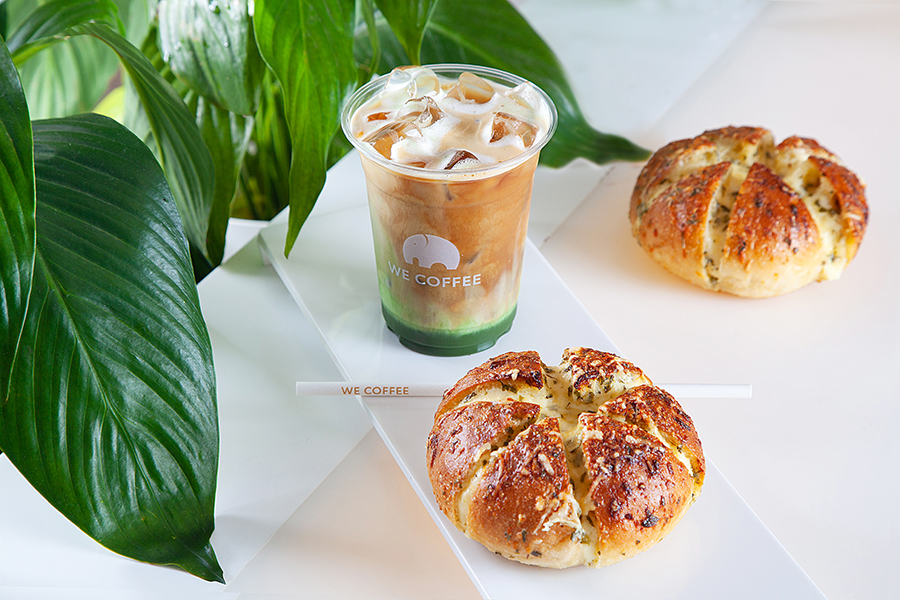
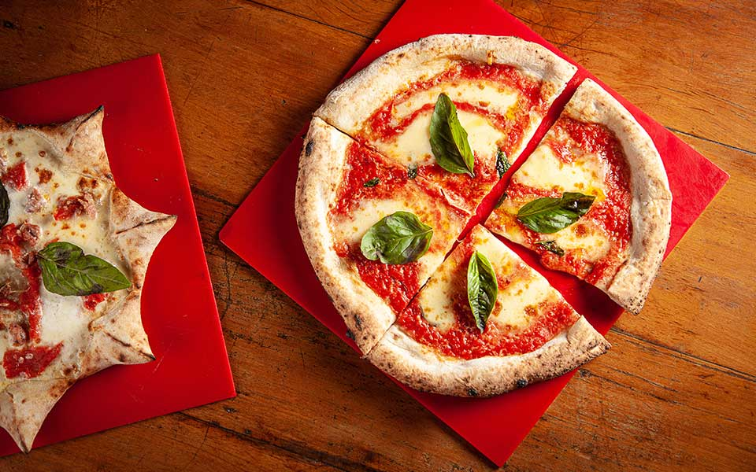

We Coffe
Cafeteria com influência asiática e com ambiente instagramável.
Opções de serviço: Refeição no local · Para viagem
Endereço: Alameda Lorena, 1682 - Jardim Paulista, São Paulo - SP, 01424-006 Site oficialHorário de funcionamento: 09:00 ás 20:00

Pizzaria Napoli Centrale
Pizzas assadas no forno a lenha, além de calzones fritos e gelatos, em espaço relaxado com cozinha aberta.
Opções de serviço: Refeição no local · Para viagem
Endereço: R. Pedro Cristi, 89 - Pinheiros, São Paulo - SP, 05421-040 Site oficialHorário de funcionamento: 11:00 ás 23:00

Bar The Victoria Pub
Clássico pub britânico que trás experiencia para seus consumidores como se estivessem no Reino Unido
Opções de serviço: Refeição no local · Para viagem
Endereço: R. Bandeira Paulista, 164 - Itaim Bibi, São Paulo - SP, 04532-000 Site oficialHorário de funcionamento: 10:00 ás 00:00